Connection Instruction between Apache NiFi and FusionInsight¶
Succeeded Case¶
Apache NiFi 1.7.1 ↔ FusionInsight HD V100R002C80SPC200 (HDFS/HBase/Hive/Spark/Kafka)
Installing Apache NiFi¶
Purpose¶
Installing Apache NiFi 1.7.1
Prerequisites¶
- Installing FusionInsight HD cluster and its client completed
Procedure¶
-
Get JAVA_HOME configuration by execute source command on client side
source /opt/hadoopclient/bigdata_env echo $JAVA_HOME

-
Download NiFi installation file from
https://nifi.apache.org/download.html, move the file to client side by using tool WinSCP , execute commandunzip nifi-1.7.1-bin.zipto unzip the installation file to the following directory/usr/nifi/nifi-1.7.1

-
Configure NiFi server IP address and port by execute following command
vi /usr/nifi/nifi-1.7.1/conf/nifi.propertiesand adjust the propeties within the nifi.properties filenifi.web.http.host=172.16.52.190 nifi.web.http.port=8085

-
Start and Stop NiFi server
cd /usr/nifi/nifi-1.7.1 bin/nifi.sh start bin/nifi.sh stop

-
Start NiFi Server
bin/nifi.sh start
Configuring Kerberos authentication within NiFi¶
Purpose¶
Configuring Kerberos authentication within NiFi server for the later connection usage
Prerequisites¶
-
Installing Apache NiFi completed
-
Installing FusionInsight HD cluster and its client completed
-
Create a developuser for connection
Procedure¶
-
Download the required Kerberos authentication files
user.keytabandkrb5.conffrom FusionInsight HD Manager site, save the files into the following directory/opt/developuser -
Configure Kerberos authentication by execute following command
vi /usr/nifi/nifi-1.7.1/conf/nifi.propertiesand adjust the propeties within the nifi.properties fileDetailed Configuration： nifi.kerberos.krb5.file=/opt/developuser/krb5.conf nifi.kerberos.service.principal=developuser nifi.kerberos.service.keytab.location=/opt/developuser/user.keytab

-
Enter NiFi Web UI site, right click on canvas and click on Configure icon

Click on plus icon to add the service

Find
KeytabCredentialsServiceand click ADD

Click on **gear** icon to configure   Click on **lightning** icon to enable and save the KeytabCredentialsService  
- Completed

Connecting NiFi to HDFS¶
Purpose¶
Configuring NiFi related HDFS processor to connect FusionInsight HD HDFS
Prerequisites¶
-
Installing NiFi 1.7.1 completed
-
Installing FusionInsight HD cluster and its client completed
-
Configuring Kerberos authentication within NiFi completed
PutHDFS Procedure¶
-
Find and Copy the
hdfs-site.xml，core-site.xmlfiles which located in FusionInsight HD client to the following directory/usr/nifi/nifi-1.7.1/conf -
Make an adjustment to the content of
hdfs-site.xmlthat is to delete the following property<property> <name>dfs.client.failover.proxy.provider.hacluster</name> <value>org.apache.hadoop.hdfs.server.namenode.ha.BlackListingFailoverProxyProvider</value> </property>
-
Make an adjustment to the content of
core-site.xmlthat is to change halcluster into detailed namenode ip with its port<property> <name>fs.defaultFS</name> <value>hdfs://172.21.3.102:25000</value> </property>
-
The whole process shown as the following pic:

- The configuration of processor GetFile
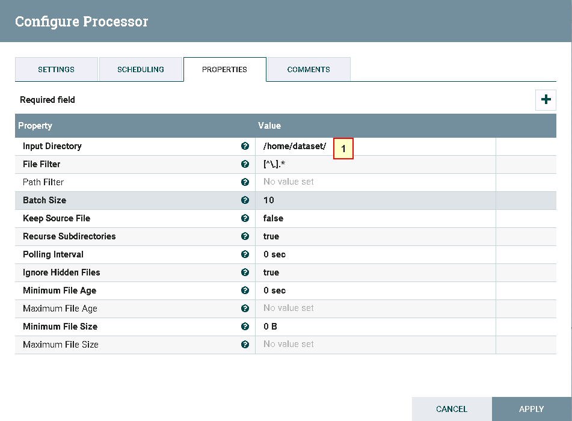
In detail： 1: /home/dataset
- The configuration of processor PutHDFS


In detail： 1: /usr/nifi/nifi-1.7.1/conf/hdfs-site.xml,/usr/nifi/nifi-1.7.1/conf/core-site.xml 2: Choose KeytabCredentialsService which was completed in previous section 3: /tmp/nifitest
- The configuration of the connection between two former processors

- Move the file
nifiHDFS.csvinto the following directory/home/datasetbefore test start

Content of nifiHDFS.csv：
1;EcitQU 2;Hyy6RC 3;zju1jR 4;R9fex9 5;EU2mVq

Log into FusionInsight HDFS to check the test outcome by using the following command
hdfs dfs -cat /tmp/nifitest/nifiHDFS.csv

GetHDFS Procedure¶
- The whole process shown as the following pic:

- The configuration of processor GetHDFS

In detail： 1: /usr/nifi/nifi-1.7.1/conf/hdfs-site.xml,/usr/nifi/nifi-1.7.1/conf/core-site.xml 2: Choose KeytabCredentialsService which was completed in previous section 3: /tmp/nifitest/HDFS
- The configuration of processor PutFile
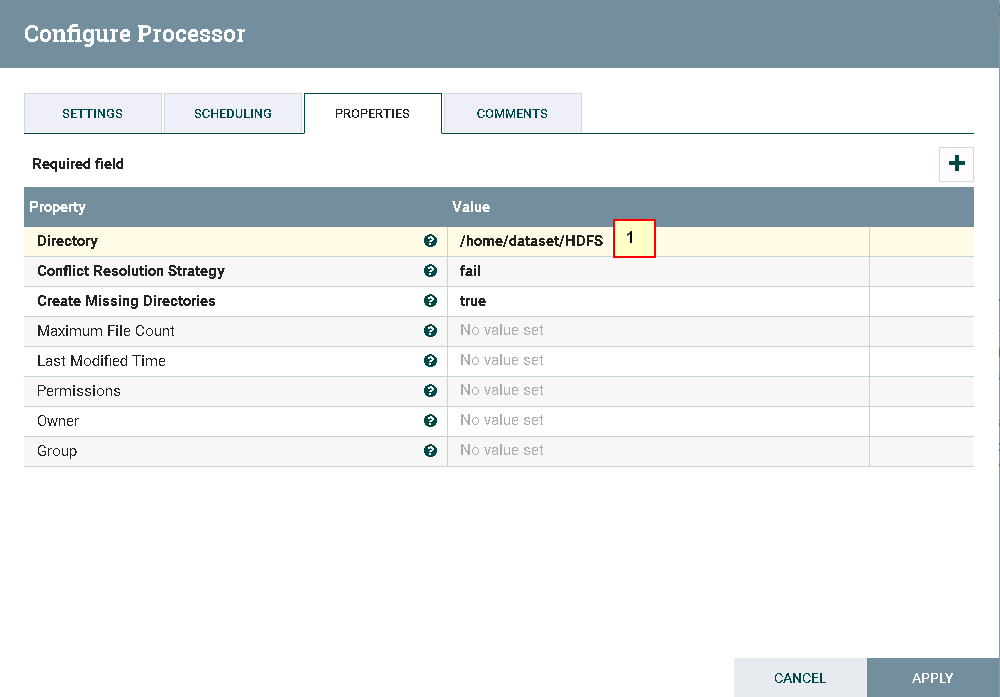
In detail： 1: /home/dataset/HDFS

- Move the file
nifiHDFS.csvinto HDFS directory/tmp/nifitest/HDFS

- Test completed
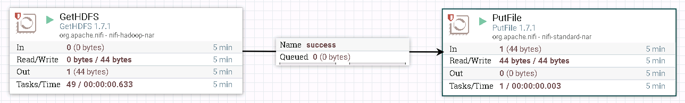
- Log into the FusionInsight HD client side to check the outcome with the directory
/home/dataset/HDFS

ListHDFS & FetchHDFS Procedure¶
- The whole process shown as the following pic:

- The configuration of processor ListHDFS

In detail： 1. /usr/nifi/nifi-1.7.1/conf/hdfs-site.xml,/usr/nifi/nifi-1.7.1/conf/core-site.xml 2. KeytabCredentialsService 3. /tmp/nifitest
- The configuration of processor RouteOnAttribute

Note: Add one customized property requiredfilenames with the value ${filename:matches('sanguo.*')} by clicking on plus icon
In detail：
1. Route to Property name
2. requiredfilenames
3. ${filename:matches('sanguo.*')}
- The relationship configuration between processor RouteOnAttribute and upper processor FetchHDFS shown as the following pic
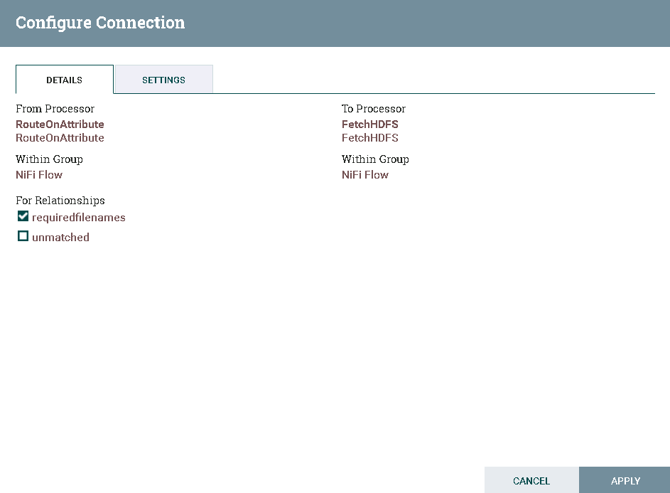
- The relationship configuration between processor RouteOnAttribute and lower processor FetchHDFS shown as the following pic

- The configuration of processor FetchHDFS

In detail： 1. /usr/nifi/nifi-1.7.1/conf/hdfs-site.xml,/usr/nifi/nifi-1.7.1/conf/core-site.xml 2. KeytabCredentialsService
- The configuration of upper processor PutFile

- The configuration of lower processor PutFile

- Check the files on FusionInsight HDFS by executing command
hdfs dfs -ls /tmp/nifitest

- Test completed

Log into FusionInsight HD client side to check the outcomes separately

Connecting NiFi to Hive¶
Purpose¶
Configuring NiFi Hive processor to connect FusionInsight HD Hive
Prerequisites¶
-
Installing NiFi 1.7.1 completed
-
Installing FusionInsight HD cluster and its client completed
-
Configuring Kerberos authentication within NiFi completed
HiveConnectionPool Procedure¶
- Enter NiFi Web UI site, right click on canvas and click on Configure icon
-
Click on plus icon to add the service
-
Find
HiveConnectionPooland click ADD

- Click on gear icon to configure


In detail 1: jdbc:hive2://172.21.3.103:24002,172.21.3.101:24002,172.21.3.102:24002/;serviceDiscoveryMode=zooKeeper;principal=hive/hadoop.hadoop.com@HADOOP.COM 2: KeytabCredentialsService
- Click on lightning icon to enable and save the HiveConnectionPool


-
Completed 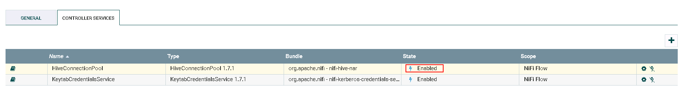
-
Create
jaas.conffile which located at directory/usr/nifi/nifi-1.7.1/confwit the following content
Client {
com.sun.security.auth.module.Krb5LoginModule required
useKeyTab=true
keyTab="/opt/developuser/user.keytab"
principal="developuser"
useTicketCache=false
storeKey=true
debug=true;
};
- Make an adjustment to the
bootstrap.conffile by executing following commandvi /usr/nifi/nifi-1.7.1/conf/bootstrap.conf

java.arg.17=-Djava.security.auth.login.config=/usr/nifi/nifi-1.7.1/conf/jaas.conf java.arg.18=-Dsun.security.krb5.debug=true
- Make an adjustment to the
nifi.propertiesfile by executing following commandvi /usr/nifi/nifi-1.7.1/conf/nifi.properties

nifi.zookeeper.auth.type=sasl nifi.zookeeper.kerberos.removeHostFromPrincipal=true nifi.zookeeper.kerberos.removeRealmFromPrincipal=true
- Execute the following command to come into the directory of NiFi Hive related library
cd /usr/nifi/nifi-1.7.1/work/nar/extensions/nifi-hive-nar-1.7.1.nar-unpacked/META-INF/bundled-dependencies
Substitute zookeeper-3.5.1.jar which is from FusionInsight HD client side for the original zookeeper-3.4.6.jar

SelectHiveQL read Hive table Procedure¶
- The whole process shown as the following pic:

- The configuration of processor SelectHiveQL


In detail： 1: HiveConnectionPool 2: select * from default.t2 3. CSV
- The configuration of processor PutFile

- Log into FusionInsight cluster to check table t2 on hive

- Completed

Check the outcome by log into the following directory /home/dataset/HIVE

PutHiveQL load whole table Procedure¶
- The whole process shown as the following pic:

- The configuration of processor GetFile

In detail： 1： /home/dataset/ 2: iris.txt
iris.txt：
1,5.1,3.5,1.4,0.2,setosa 2,4.9,3,1.4,0.2,setosa 3,4.7,3.2,1.3,0.2,setosa 4,4.6,3.1,1.5,0.2,setosa 5,5,3.6,1.4,0.2,setosa 6,5.4,3.9,1.7,0.4,setosa 7,4.6,3.4,1.4,0.3,setosa 8,5,3.4,1.5,0.2,setosa 9,4.4,2.9,1.4,0.2,setosa 10,4.9,3.1,1.5,0.1,setosa
- The configuration of processor PutHDFS

In detail： 1： /usr/nifi/nifi-1.7.1/conf/hdfs-site.xml,/usr/nifi/nifi-1.7.1/conf/core-site.xml 2： KeytabCredentialsService 3: /tmp/nifitest/loadhive
- The configuration of processor ReplaceText

In detail： 1: CREATE TABLE IF NOT EXISTS iris_createdBy_NiFi ( ID string, sepallength FLOAT, sepalwidth FLOAT, petallength FLOAT, petalwidth FLOAT, species string ) ROW FORMAT DELIMITED FIELDS TERMINATED BY ',' STORED AS TEXTFILE;LOAD DATA INPATH "hdfs:///tmp/nifitest/loadhive/iris.txt" into table iris_createdBy_NiFi;
- The configuration of processor PutHiveQL

- Move the data file
iris.txtinto the following directory/home/dataset/before test

- Completed:

Login the HIVE to check the test outcome

PutHiveQL Load the table by rows Procedure¶
- The whole process shown as the following pic:

- The configuration of processor GetFile

In detail： 1： /home/dataset/ 2： iris_add.txt
Content of iris_add.txt：
"11",5.8,2.8,5.1,2.4,"virginica" "12",6.4,3.2,5.3,2.3,"virginica" "13",6.5,3,5.5,1.8,"virginica" "14",5.7,3,4.2,1.2,"versicolor" "15",5.7,2.9,4.2,1.3,"versicolor"
- The configuration of processor SplitText

-
There is no change for the configuration of processor ExtractText
-
The configuration of processor ReplaceText

- The configuration of processor PutHiveQL

- Move the data file
iris_add.txtinto the following directory/home/dataset/before test

- Completed：

Login the HIVE to check the test outcome：

Connecting NiFi to HBase¶
Purpose¶
Configuring NiFi HBase processor to connect FusionInsight HD HBase
Prerequisites¶
-
Installing NiFi 1.7.1 completed
-
Installing FusionInsight HD cluster and its client completed
-
Configuring Kerberos authentication within NiFi completed
HBase_1_1_2_ClientService Procedure¶
-
Move the hbase related configuration file
hbase-site.xmlwhich is within the FusionInsight HD client side into the following directory/usr/nifi/nifi-1.7.1/conf -
Execute the following command to come into the directory of NiFi HBase related library
cd /usr/nifi/nifi-1.7.1/work/nar/extensions/nifi-hbase_1_1_2-client-service-nar-1.7.1.nar-unpacked/META-INF/bundled-dependencies
Substitute zookeeper-3.5.1.jar which is from FusionInsight HD client side for the original zookeeper-3.4.6.jar

- Enter NiFi Web UI site, right click on canvas and click on Configure icon
- Click on plus icon to add the service

- Find
HBase_1_1_2_ClientServiceand click ADD

- Click on gear icon to configure


In detail： 1： /usr/nifi/nifi-1.7.1/conf/hbase-site.xml,/usr/nifi/nifi-1.7.1/conf/core-site.xml 2： KeytabCredentialsService
- Click on lightining icon to enable and save the
HBase_1_1_2_ClientService


- Completed

PutHBaseJSON load the table Procedure¶
- The whole process shown as the following pic:

- The configuration of processor GetFile

Content of hbase_test.csv：
1,5.1,3.5,setosa 2,6.1,3.6,versicolor 3,7.1,3.7,virginica
- The configuration of processor InverAvroSchema

In detail： 1: flowfile-attribute 2: csv 3: false 4: hbase_test_data
- The configuration of processor ConvertCSVToAvro

- The configuration of processor ConvertAvroToJSON

- The configuration of processor SplitJson

- The configuration of processor PutHBaseJSON

In detail:
1: HBase_1_1_2_ClientService
2: hbase_test
3: ${UUID()}
4: data
- Move the data file
hbase_test.csvinto the following directory/home/dataset/HBASEbefore test

In addition, execute following command to create a HBase table
hbase shell create 'HBase_test','data'

- Completed：

Login into the FusionInsight HD cluster to check the outcome:

GetHbase Procedure¶
- The whole process shown as the following pic:

- The configuration of processor GetHBase

- The configuration of processor PutFile

- Completed

Login into the following directory /home/dataset/GetHBase_test to check the test outcome


Connecting NiFi to Spark¶
Purpose¶
Configuring NiFi Livy Session processor to connect FusionInsight HD Spark
Prerequisites¶
-
Installing NiFi 1.7.1 completed
-
Installing FusionInsight HD cluster and its client completed
-
Configuring Kerberos authentication within NiFi completed
-
Installing and configuring Apache Livy 0.5.0 (Apache Livy can be installed on test host or any other host as long as they can connect to each other including FusionInsight HD cluster)
There exist connection instruction between Apache Livy and FusionInsight, please check the FusionInsight ecosystem
LivySessionController Procedure¶
- Enter NiFi Web UI site, right click on canvas and click on Configure icon
- Click on plus icon to add the service

- Find
LivySessionControllerand click ADD

- Click on gear icon to configure


In detail： 1: 172.21.3.43 (host ip for Apache Livy) 2: 8998 (Livy default port, can be changed) 3: spark 4：KeytabCredentialsService
- Click on plus icon to add the service

-
Find
LivySessionControllerand click ADD -
Click on gear icon to configure

Change the name of Controller as LivySessionController_PySpark


In detail： 1: 172.21.3.43 (host ip for Apache Livy) 2: 8998 (Livy default port, can be changed) 3: pysaprk 4：KeytabCredentialsService
-
Click on plus icon to add the service
-
Find
LivySessionControllerand click ADD -
Click on gear icon to configure

Change the name of Controller as LivySessionController_SparkR


In detail： 1: 172.21.3.43 (host ip for Apache Livy) 2: 8998 (Livy default port, can be changed) 3: sparkr 4：KeytabCredentialsService
- Click on lightining icon to enable and save the
LivySessionController,LivySessionController_PySpark,LivySessionController_SparkR

- Completed
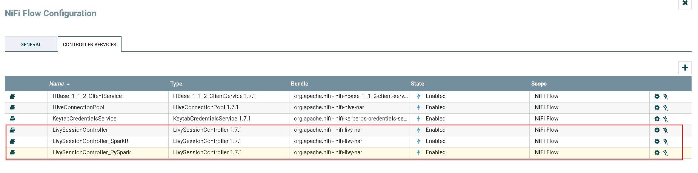
Spark Sample Procedure¶
- The whole process shown as the following pic:

- The configuration of processor GetFile

In detail： 1: /home/dataset/sparkTest 2: code1.txt
Content of code1.txt：
1+2
- The configuration of processor ExtractText
Click plus icon to add a Property code1 with its Value as $
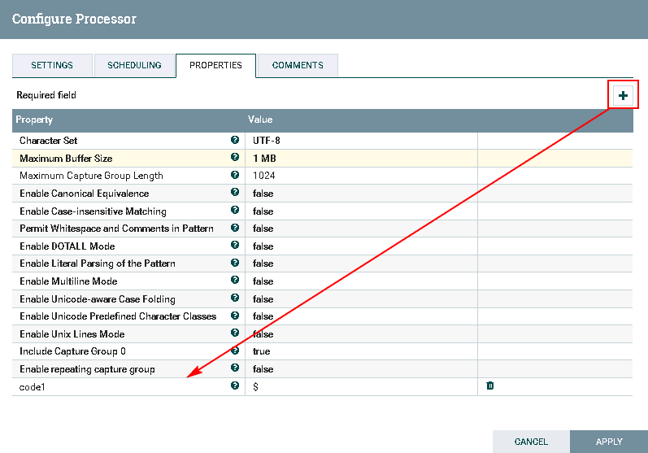
- The configuration of processor ExecuteSparkInteractive

In detail：
1: LivySessionController
2: ${code1}
- Move the code file
code1.txtinto the following directory/home/dataset/sparkTestbefore test

Start the Livy server


- Completed：

Log into the Livy server to check the outcome

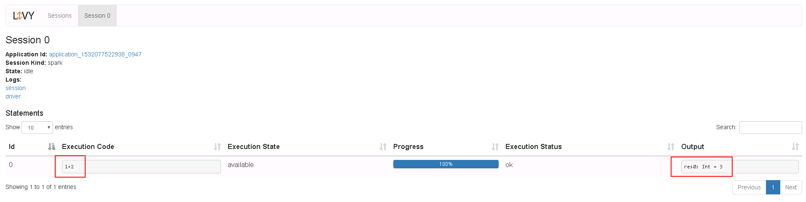
PySpark Sample Procedure¶
- The whole process shown as the following pic:
- The configuration of processor GetFile

In detail： 1: /home/dataset/sparkTest 2: code2.txt
Content of code2.txt：
import random NUM_SAMPLES = 100000 def sample(p): x, y = random.random(), random.random() return 1 if x*x + y*y < 1 else 0 count = sc.parallelize(xrange(0, NUM_SAMPLES)).map(sample).reduce(lambda a, b: a + b) print "Pi is roughly %f" % (4.0 * count / NUM_SAMPLES)
- The configuration of processor ExtractText
Click plus icon to add a Property code2 with its Value as $

- The configuration of processor ExecuteSparkInteractive

In detail：
1: LivySessionController_PySpark
2: ${code2}
- Move the code file
code2.txtinto the following directory/home/dataset/sparkTestbefore test

Start the Livy server
- Completed

Log into the Livy server to check the outcome


SparkR Sample Procedure¶
- The whole process shown as the following pic:

Note: It's different by comparing to example of former Spark and PySpark
-
The configuration of processor GetFile

In detail： 1: /home/dataset/sparkTest 2: code3.txt
Content of
code3.txt：piR <- function(N) { x <- runif(N) y <- runif(N) d <- sqrt(x^2 + y^2) return(4 * sum(d < 1.0) / N) } set.seed(5) cat("Pi is roughly ",piR(1000000) ) -
The configuration of processor ExecuteSparkInteractive

In detail： 1: /home/dataset/sparkTest 2: code content of code3.txt
-
Move the code file
code3.txtinto the following directory/home/dataset/sparkTestbefore test
Start the Livy server
-
Completed

Log into the Livy server to check the outcome


Connecting NiFi to Kafka¶
Purpose¶
Configuring NiFi Kafka processor to connect FusionInsight HD Kafka
Prerequisites¶
-
Installing NiFi 1.7.1 completed
-
Installing FusionInsight HD cluster and its client completed
-
Configuring Kerberos authentication within NiFi completed
GetHTTP & PutKafka Procedure¶
- The whole process shown as the following pic:

- The configuration of processor GetHTTP

In detail： 1: http://vincentarelbundock.github.io/Rdatasets/csv/datasets/iris.csv 2: iris.csv
- The configuration of processor PutKafka

In detail： 1： 172.21.3.102:21005,172.21.3.101:21005,172.21.3.103:21005 2： nifi-kafka-test-demo 3： nifi
- Before test：
Log into the Kafka component within FusionInsightHD client side and create a Topic nifi-kafka-test-demo
cd /opt/hadoopclient/Kafka/kafka/bin kafka-topics.sh --create --topic nifi-kafka-test-demo --zookeeper 172.21.3.101:24002,172.21.3.102:24002,172.21.3.103:24002/kafka --partitions 1 --replication-factor 1

- Completed：
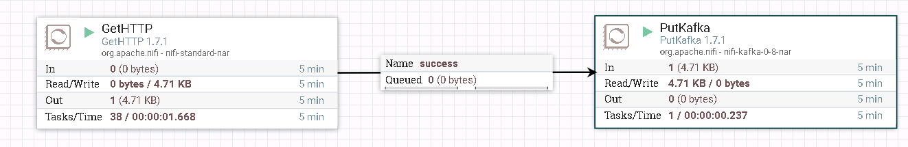
Log into the kafka component within FusionInsightHD client side to check the outcome
cd /opt/hadoopclient/Kafka/kafka/bin kafka-console-consumer.sh --zookeeper 172.21.3.101:24002,172.21.3.102:24002,172.21.3.103:24002/kafka --topic nifi-kafka-test-demo --from-beginning


ConsumeKafka_0_11 Procedure¶
- The whole process shown as the following pic:

- The configuration of processor ConsumeKafka_0_11

1: 172.21.3.101:21005,172.21.3.102:21005,172.21.3.103:21005 2: PLAINTEXT 3: KeytabCredentialsService 4: Kafka 5: example-metric1 6: DemoConsumer
- The configuration of processor PutFile

-
Before test：
Open the
kafka-exampleswhich provided by FusionInsightHD client in eclipse, configure thekafka-examplesso that it can be successfully ran and produce messages to kafka
Note: There must be a producer when testing the NiFi ConsumeKafka_0_11 processor, run
NewProducer.javawithinkafka-examplesat first and then start to test NiFi ConsumeKafka_0_11 -
Completed：

Log into the follow directory
/home/dataset/Kafkato check the test outcome

Connecting NiFi to Kafka with security mode¶
Purpose¶
Configuring NiFi Kafka processor to connect FusionInsight HD Kafka with port 21007
Prerequisites¶
-
Installing NiFi 1.7.1 completed
-
Installing FusionInsight HD cluster and its client completed
-
Complete NiFi Kerberos configuration
-
nifi host ip: 172.16.2.119, FI HD ip: 172.16.6.10-12
Kerberos authentication related operation steps¶
- Create a jaas.conf file in the nifi host
/optpath, with the content：KafkaClient { com.sun.security.auth.module.Krb5LoginModule required useKeyTab=true principal="developuser@HADOOP.COM" keyTab="/opt/user_keytabs/101keytab/user.keytab" useTicketCache=false serviceName="kafka" storeKey=true debug=true; };

-
Stop nifi with the command
bin/nifi.sh stop -
Find the corresponding kafka client jar package in the kafka client of FI HD，for example:
/opt/125_651hdclient/hadoopclient/Kafka/kafka/libs/kafka-clients-1.1.0.jar
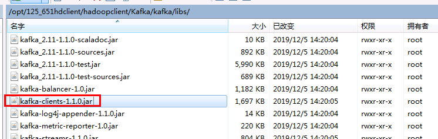
- Find the original kafka client jar package on
/opt/nifi/nifi-1.7.1/work/nar/extensions/nifi-kafka-1-0-nar-1.7.1.nar-unpacked/META-INF/bundled-dependencieswith the name kafka-clients-1.1.0.jar. Rename it into kafka-clients-0.11.0.1.jar.org. And copy the FI HD corresponding kafka-clients-1.1.0.jar into this directory:
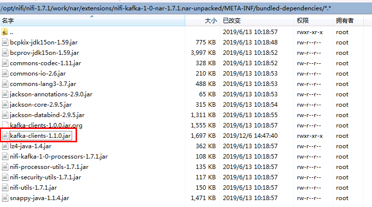
- Login to nifi server，use the following command at first to load the environment variables
source /opt/hadoopclient/bigdata_env，Then use the following command to load the jvm parameters for java running:export JAVA_TOOL_OPTIONS="-Xmx512m -Xms64m -Djava.security.auth.login.config=/opt/jaas.conf -Dsun.security.krb5.debug=true -Dkerberos.domain.name=hadoop.hadoop.com -Djava.security.krb5.conf=/etc/krb5.conf"
/etc/krb5.conf is the authentication krb5.conf file corresponding to the connecting FI cluster
After completing the above steps, you can use the command java -version to check whether the jvm parameters are successfully loaded:
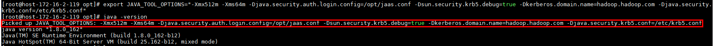
- Use command
bin/nifi.sh startto start nifi:

PublishKafka_1_0 Sample¶
- The entire workflow is：
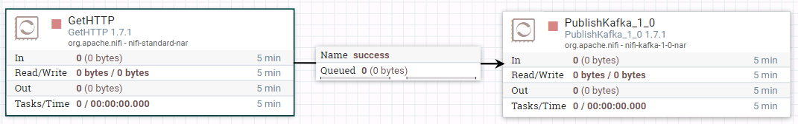
- The configuration of the processor GetHTTP is as follows：
1: http://vincentarelbundock.github.io/Rdatasets/csv/datasets/iris.csv 2: iris.csv

1: 172.16.4.121:21007,172.16.4.122:21007,172.16.4.123:21007 2: SASL_PLAINTEXT 3: Kafka 4: KeytabCredentialsService 5: testtopic 6: Guarantee Replicated Delivery
- Running the entire workflow：
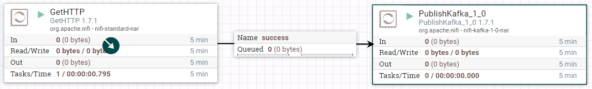
- Check the outcome on kafka:

ConsumeKafka_1_0 Sample¶
- The entire workflow is：

- The configuration of the processor ConsumeKafka_1_0 is as follows：
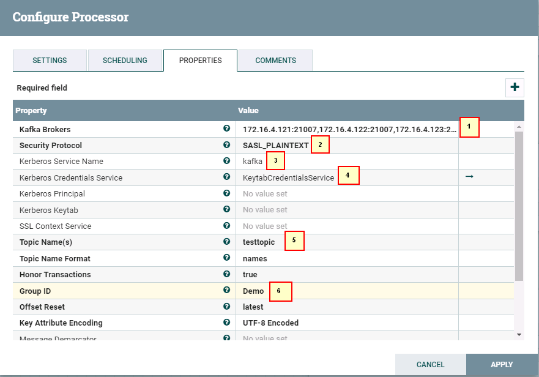
1: 172.16.4.121:21007,172.16.4.122:21007,172.16.4.123:21007 2: SASL_PLAINTEXT 3: kafka 4: KeytabCredentialsService 5: testtopic 6: Demo
- The configuration of the processor PutFile is as follows：

- Running the entire workflow：
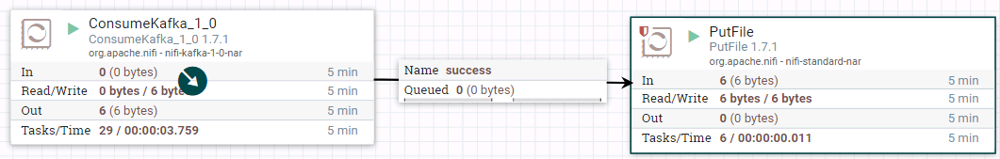
- Use command on Kafka client to insert some data:
./bin/kafka-console-producer.sh --broker-list 172.16.4.121:21007,172.16.4.122:21007,172.16.4.123:21007 --topic testtopic --producer.config config/producer.properties

- Login to nifi host
/opt/nifikafka21007to check the outcome
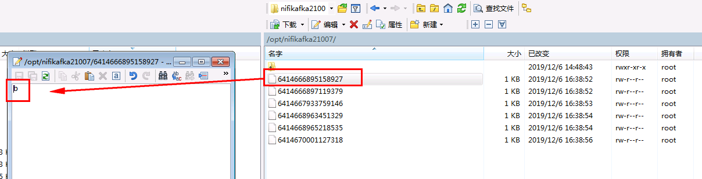